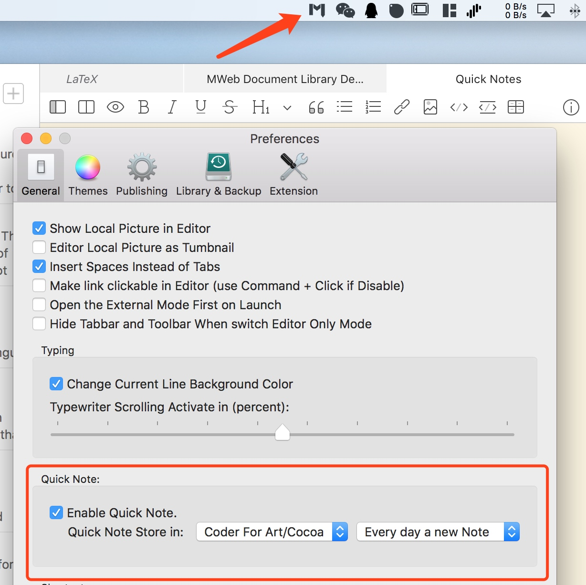
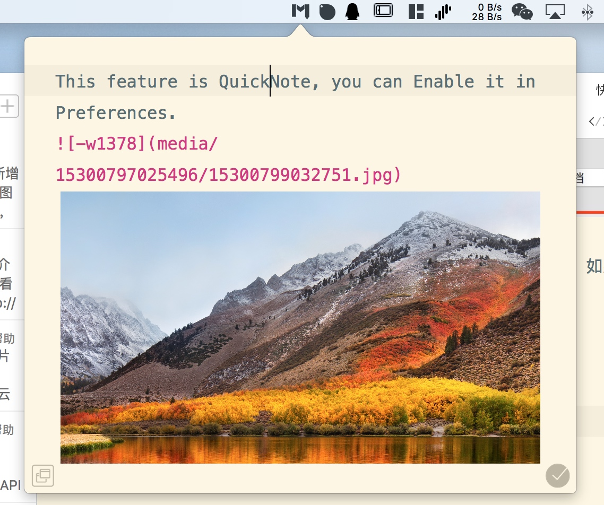

The Quick Note feature is a new feature in 3.x. This feature relies on the icons on the status bar to freely add notes and images, and supports adding the added material to a document in days, making it easy to organize and record history. Collect the situation. Simply put, it is the function of text and material collection, and the material is mostly the images.
Open the Quick Note
This feature is turned off by default, because it takes up a valuable position on the status bar, you can open it in Preferences - General, as shown below.

You can set the time for the quick notes to be saved in that category and generate a new document. If you use it frequently, you can choose one day, otherwise you can choose 3, 5 days, and so on.
Using the Quick Note feature
The following picture shows the quick note function, you can open and fill in some content at will. You can also take a screenshot and paste the image directly, just like the MWeb editor. In addition, you can also drag and drop an image directly into the browser's quick note icon in the status bar, and MWeb will automatically add the image you dragged. If you feel that this collection is complete, you can add it to the document library by clicking the "✓" button.

You can also drag and drop the quick note interface and place it anywhere on the screen, as shown below.
The button in the left bottom corner of the interface is to display the MWeb interface. If you call the quick note interface and click this button in the browser or other interface, the MWeb main interface will open.